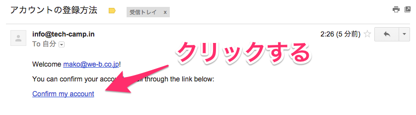

おなじみのdeviseを使ってログイン機能をつくっていきます。
今回作成するアプリケーションのProfyでは、メールアドレスの認証を実装します。
これまではメールアドレスを入力さえすれば、新規登録とログインが可能でしたが、今回はサービスから送られてきた
メールから認証しないとログインすることができないようにします。
生成されたファイルについて解説します。config/initializersはrailsを起動したときに読み込まれる設定ファイルを置きます。
| ファイル名 | 役割 |
|---|---|
| config/initializers/devise.rb | deviseに関する設定が記述されています。初期設定からカスタマイズする際に編集します。 |
| config/locales/devise.en.yml | バリデーション時エラーメッセージなどが設定されています。デフォルトでは全て英語になっています。 |
rails g devise:installを実行すると、以下のような英文のメッセージが表示されている思います。
1 2 3 4 5 6 7 8 9 10 11 12 13 14 15 16 17 18 19 20 21 22 23 24 25 26 27 28 29 30 31 32 33 34 35 |
===============================================================================
Some setup you must do manually if you haven't yet:
1. Ensure you have defined default url options in your environments files. Here
is an example of default_url_options appropriate for a development environment
in config/environments/development.rb:
config.action_mailer.default_url_options = { host: 'localhost', port: 3000 }
In production, :host should be set to the actual host of your application.
2. Ensure you have defined root_url to *something* in your config/routes.rb.
For example:
root to: "home#index"
3. Ensure you have flash messages in app/views/layouts/application.html.erb.
For example:
<p class="notice"><%= notice %></p>
<p class="alert"><%= alert %></p>
4. If you are deploying on Heroku with Rails 3.2 only, you may want to set:
config.assets.initialize_on_precompile = false
On config/application.rb forcing your application to not access the DB
or load models when precompiling your assets.
5. You can copy Devise views (for customization) to your app by running:
rails g devise:views
===============================================================================
|
こちらには、手動で行うべき設定が表示されています。１〜５の手順にそって設定をしていきましょう。
41 |
config.action_mailer.default_url_options = { host: 'localhost', port: 3000 }
|
ユーザーの新規登録などで認証メールを送った際に文中にある認証リンクのURLを設定します。
ローカルで開発する際のURLは、localhost:3000なので上記のような設定になります。
今回のアプリケーションではtop_controllerのindexアクションをルートパスに設定します。
まだ、top_controllerは作成していないのでrails sでlocalhost:3000にアクセスしても以下のようにエラーになります。
top_cotrollerを作成していきましょう。
app/views/top/以下にindex.html.erbを新規作成して置いてください。rails g devise:installを実行時に表示された先ほどの以下のメッセージについて解説します。
1 2 3 4 |
3. Ensure you have flash messages in app/views/layouts/application.html.erb.
For example:
<p class="notice"><%= notice %></p>
<p class="alert"><%= alert %></p>
|
<%= notice %> や <%= alert %> はフラッシュメッセージと呼ばれるものです。
これらをすべてのビューで共通のレイアウトファイルであるapp/views/layouts/application.html.erbに追記するようにと言われています。
フラッシュメッセージはログイン時の「ようこそ」という一時的に出すメッセージや、フォーム送信時の入力エラーなど、ユーザに簡単な通知を行いたい時に利用します。
詳しくはこちらのブログを参考にしてください。
今回の場合はdeviseが自動で表示してくれるフラッシュメッセージを表示するためにレイアウトファイルに、フラッシュメッセージ用のタグを書いていきます。
通常は、<%= notice %>、<%= alert %>こちらを追記するのですが、今回はtwitter-bootstrap-railsというCSSフレームワークのgemを利用しているため、ビューヘルパーの<%= bootstrap_flash %>と記述します。
今は<%= bootstrap_flash %>と書くことで「ログインに成功しました」「ログアウトしました」といったようなdevise が準備しているメッセージが表示できるようになったとイメージできれば大丈夫です。
1 2 3 4 5 6 7 8 9 10 11 12 13 14 15 16 17 18 19 20 21 22 23 24 25 26 27 28 29 30 31 |
<!DOCTYPE html>
<html lang='ja'>
<head>
<meta charset='utf-8'>
<meta http-equiv='X-UA-Compatible' content='IE=Edge,chrome=1'>
<meta name='viewport' content='width=device-width, initial-scale=1.0'>
<title>Profy</title>
<%= csrf_meta_tags %>
<%= stylesheet_link_tag 'application', media: 'all', 'data-turbolinks-track' => true %>
<%= javascript_include_tag 'application', 'data-turbolinks-track' => true %>
</head>
<body>
<script type='text/javascript' charset='utf-8'>
$(function(){
$.material.init();
});
</script>
<%= render partial: 'common/header' %>
<div class='container'>
<div class='row'>
<div class='col-lg-12'>
<%= bootstrap_flash %>
<%= yield %>
</div>
</div>
<footer class='row text-center'>
<p>(C) Profy 2015</p>
</footer>
</div>
</body>
</html>
|
18行目の <%= render partial: 'common/header' %> はcommonディレクトリ配下の_header.html.erbの部分テンプレートを呼び出すことを意味しています。
ここでは、ヘッダー部分の部分テンプレートを読み込んでいるので、この設定に必要なファイルを設置しましょう。
1 2 3 4 5 6 7 8 9 10 11 12 13 14 15 16 17 18 19 20 21 22 23 24 |
<% if user_signed_in? %>
<div class='navbar navbar-default navbar-fixed-top'>
<div class='container'>
<button type='button' class='navbar-toggle' data-toggle='collapse' data-target='.navbar-responsive-collapse'>
<span class='icon-bar'></span>
<span class='icon-bar'></span>
<span class='icon-bar'></span>
</button>
<%= link_to root_path, :class => 'navbar-brand' do %>
<%= image_tag 'logo.png' %> <small class='hidden-xs hidden-sm'>仲間とプロフィールを共有しよう！</small>
<% end %>
<div class='navbar-collapse collapse navbar-responsive-collapse navbar-right'>
<ul class='nav navbar-nav'>
<li><%= link_to 'HOME', root_path %></li>
<li class='dropdown'>
<a href='#' class='dropdown-toggle' data-toggle='dropdown' role='button' aria-expanded='false'>アカウント <span class='caret'></span></a>
<ul class='dropdown-menu' role='menu'>
</ul>
</li>
</ul>
</div>
</div>
</div>
<% end %>
|
こちらは、サービスのヘッダーにあたる部分です。1行目の<% if user_signed_in? %>でログインしているときだけ表示するように条件分岐をしています。
1 2 3 4 |
<div class='sign_up_logo'>
<%= image_tag 'logo.png' %>
<small>仲間とプロフィールを共有しよう！</small>
</div>
|
このファイルは新規登録ページと、ログインページで表示するロゴに使用します。現時点ではどこからも読みだしていません。
deviseビューをカスタマイズするにはrails g devise:viewsコマンドを使って生成します。
deviseはgemをインストールしただけで、ログイン画面や、新規登録画面が用意されます。
※これらの画面は、deviseのgemの中に記述されているためアプリケーション内で見つけることはできません。
しかし、ほとんどの場合オリジナルでHTMLをカスタマイズして使うケースが多いため、
rails g devise:viewsコマンドでビューファイル群を生成します。
1 |
$ rails g devise:views
|
今回カスタマイズするのは、ログイン画面のapp/views/devise/sessions/new.html.erbと新規登録画面のapp/views/devise/registrations/new.html.erbです。
app/views/devise/registrations/new.html.erbを以下のように編集してください。1 2 3 4 5 6 7 8 9 10 11 12 13 14 15 16 17 18 19 20 21 22 23 24 25 26 27 28 29 30 31 32 33 34 35 36 37 |
<div class='regist_back'>
<div class='log-up'>
<%= render partial: 'common/login_logo' %>
<div class='log-in-inner'>
<h2>会員登録</h2>
<%= form_for(resource, as: resource_name, url: registration_path(resource_name)) do |f| %>
<%= devise_error_messages! %>
<div class='form-group'>
<%= f.label :メールアドレス %><br />
<%= f.email_field :email, autofocus: true, class: 'form-control' %>
</div>
<div class='form-group'>
<%= f.label :パスワード %>
<% if @validatable %>
<em>(<%= @minimum_password_length %> 文字以上)</em>
<% end %><br />
<%= f.password_field :password, autocomplete: 'off', class: 'form-control' %>
</div>
<div class='form-group'>
<%= f.label :パスワード（確認） %><br />
<%= f.password_field :password_confirmation, autocomplete: 'off', class: 'form-control' %>
</div>
<div class='actions'>
<%= f.submit class: 'btn btn-primary withripple', value: '新規登録' %>
</div>
<% end %>
<%= render 'devise/shared/links' %>
</div>
</div>
</div>
|
app/views/devise/sessions/new.html.erbを以下のように編集してください。1 2 3 4 5 6 7 8 9 10 11 12 13 14 15 16 17 18 19 20 21 22 23 24 25 26 27 28 29 30 31 32 33 34 35 36 37 38 39 |
<div class='login_back'>
<div class='log-in'>
<%= render partial: 'common/login_logo' %>
<div class='log-in-inner'>
<h2>ログイン</h2>
<%= form_for(resource, as: resource_name, url: session_path(resource_name)) do |f| %>
<% if alert %>
<p class='alert alert-danger'><%= alert %></p>
<% end %>
<div>
<%= f.email_field :email, autofocus: true, placeholder: 'メールアドレス', class: 'input form-control' %>
</div>
<div>
<%= f.password_field :password, autocomplete: 'off', placeholder: 'パスワード', class: 'input form-control' %>
</div><br />
<% if devise_mapping.rememberable? %>
<div class='checkbox'>
<label>
<input id='user_remember_me' name='user[remember_me]' type='checkbox' value='1'>
<%= f.label :ログイン情報を記憶する, class: 'memory-check' %>
</label>
</div>
<% end %>
<div>
<%= f.submit class: 'btn btn-primary withripple', value: 'ログイン' %>
</div>
<% end %>
<div class='login_link'>
<%= render 'devise/shared/links' %>
</div>
</div>
</div>
</div>
|
この時点では、まだ基本的な設定をしただけなのでログインをすることはできません。
次にdeviseのコマンドを使って、ユーザーモデルを作成していきます。
rails g devise モデル名はログインに紐付いたモデルの生成とルーティングの追加を行ってくれるdeviseのコマンドです。
生成されるファイルはrails g model モデル名で生成されるファイルと似ています。
ActiveRecordを継承したモデルとテーブルのカラム情報などを記述したmigrationファイル、それに関連したファイルです。
rails g devise モデル名を実行するとdeviseを利用するために初期設定された状態でファイルが生成されるので便利です。モデル名は、userにかぎらず、member、guestなども自由に指定できます。
config/routes.rbを見ると以下の様な記述が追記されていると思います。
1 2 3 |
Rails.application.routes.draw do
devise_for :users
root to: "top#index"
|
devise_forはログインまわりに必要なルーティングを一気に生成してくれるdeviseのヘルパーメソッドです。
rake routesを実行して現在設定されているルーティングを確認してください。devise_for :usersを記述することで以下のようにログイン周りで必要なルーティングが生成されていることが確認できます。
1 2 3 4 5 6 7 8 9 10 11 12 13 14 15 16 17 |
Prefix Verb URI Pattern Controller#Action
new_user_session GET /users/sign_in(.:format) devise/sessions#new
user_session POST /users/sign_in(.:format) devise/sessions#create
destroy_user_session DELETE /users/sign_out(.:format) devise/sessions#destroy
user_password POST /users/password(.:format) devise/passwords#create
new_user_password GET /users/password/new(.:format) devise/passwords#new
edit_user_password GET /users/password/edit(.:format) devise/passwords#edit
PATCH /users/password(.:format) devise/passwords#update
PUT /users/password(.:format) devise/passwords#update
cancel_user_registration GET /users/cancel(.:format) devise/registrations#cancel
user_registration POST /users(.:format) devise/registrations#create
new_user_registration GET /users/sign_up(.:format) devise/registrations#new
edit_user_registration GET /users/edit(.:format) devise/registrations#edit
PATCH /users(.:format) devise/registrations#update
PUT /users(.:format) devise/registrations#update
DELETE /users(.:format) devise/registrations#destroy
root GET / top#index
|
migrationファイルが生成されましたが、まだrake db:migrateは実行しないでください。
メールアドレスによる認証を実装するためには、いくつか設定が必要になります。
メール認証を始めとするdeviseの具体的な使い方を知りたい際は、 githubのreadmeを見るのが一番です。
英語が苦手な方は、日本語のブログも検索すればたくさん出てきます。全ての機能を理解するのは難しいのでまずは、このカリキュラムの資料にそって実装して雰囲気をつかんでいきましょう。
これらは、認証メールのトークンや再送信の情報を保存するカラムですが、デフォルトではコメントアウトされています。
1 2 3 4 5 |
## Confirmable
t.string :confirmation_token
t.datetime :confirmed_at
t.datetime :confirmation_sent_at
t.string :unconfirmed_email # Only if using reconfirmable
|
rake db:migrateを実行してusersテーブルを作成してください。1 |
$ rake db:migrate
|
テーブルを作成できたので実際に新規登録画面とログイン画面を確認してみましょう。
control + c → rails s)しておきましょう。次にルートパスhttp://localhost:3000にアクセスしたらどうなるか確認してみましょう。
rails sでサーバーを起動してhttp://localhost:3000にアクセスしてください。以下のように何もない画面が表示されると思います。
Profyはログインが必要なサービスなので、まだログインもしていないのに
トップの画面にアクセスできてしまうのはおかしいですよね。ログインしていないときは、ログイン画面に飛ばされるようにしましょう。
deviseのauthenticate_user!というメソッドを使うと簡単に実現することができます。
authenticate_user!はユーザがログインしているかどうかを確認し、ログインしていない場合はユーザをログインページにリダイレクトするdeviseのメソッドです。
通常、before_actionを合わせて使用します。before_actionのexceptやonlyオプションを組み合わせると特定のアクションを指定することもできます。
【例】
1 2 3 4 5 6 7 8 9 |
class TestController < ApplicationController
before_action :authenticate_user!, :only => [:show, :index]
def index
end
def show
end
|
before_action :authenticate_user!を追加してください1 2 3 4 5 |
class ApplicationController < ActionController::Base
before_action :authenticate_user!
# Prevent CSRF attacks by raising an exception.
# For APIs, you may want to use :null_session instead.
protect_from_forgery with: :exception
|
ApplicationControllerは、TopControllerをはじめとするあらゆるコントローラーが継承するため、
ここにbefore_action :authenticate_user!を設定すると、すべてのアクセスに対してログインをしているかの確認が入るようになります。さっそくリダイレクトがかかるか確認してみましょう。
先ほどリダイレクトされた際に、フラッシュで表示されたエラーメッセージがYou need to sign in or sign up before continuing.と英語で出力されたのにお気づきでしょうか。
RailsのWebアプリの多言語化をサポートしてくれるGem、i18nを利用して、この部分を日本語化していきます。
Railsの国際化対応（日本語化対応）は「i18n」というGemを使います。
i18nは、internationalization(国際化)という意味です。18はiとnの間にある文字数を指しています。
i18nを使うと簡単に言語を切り替えることが可能になります。一例を紹介します。
【例】
1 2 3 |
ja:
view:
hello: "こんにちは、世界！"
|
1 2 3 |
en:
view:
hello: "Hello！World!"
|
21 |
config.i18n.default_locale=:ja#英語の場合は:en
|
1 |
<%= t('view.hello') %>
|
言語指定を日本語にしているため"こんにちは、世界！"と表示されます。
i18nの機能はこれだけではなく、アプリケーションの言語を切り替えるために様々な機能が用意されています。
詳しくはこちらのブログをご覧ください。
今は全ての機能を覚える必要はありません。ただ、言語設定に関するものはi18nを使うと覚えておき、必要なときに調べられれば大丈夫です。
早速日本語化を進めていきましょう。
21 |
config.i18n.default_locale = :ja #コメントアウトしている場合は外す。
|
ja.ymlは基本的なrails処理の日本語化ファイル、devise.ja.ymlはdeviseに関わる処理の日本語化ファイルです。
これらの日本語化ファイルはWEBで検索すればダウンロードすることができます。
上の例であげた<%= t() %>というメソッドは、deviseの中に定義されているため今回は見ることはありません。
これだけでは、まだ完全には日本語化されていません。
「Sing up」「Forgot your password?」などビューに直接書かれている英語の文字があるので編集します。
1 2 3 4 5 6 7 8 9 10 11 12 13 14 15 16 17 18 19 20 21 22 23 24 25 |
<% if controller_name != 'sessions' %>
<%= link_to 'ログイン', new_session_path(resource_name) %><br />
<% end %>
<% if devise_mapping.registerable? && controller_name != 'registrations' %>
<%= link_to '新規登録', new_registration_path(resource_name) %><br />
<% end %>
<% if devise_mapping.recoverable? && controller_name != 'passwords' && controller_name != 'registrations' %>
<%= link_to 'パスワードを忘れた方', new_password_path(resource_name) %><br />
<% end %>
<% if devise_mapping.confirmable? && controller_name != 'confirmations' %>
<%= link_to '確認メールの再送信', new_confirmation_path(resource_name) %><br />
<% end %>
<% if devise_mapping.lockable? && resource_class.unlock_strategy_enabled?(:email) && controller_name != 'unlocks' %>
<%= link_to "Didn't receive unlock instructions?", new_unlock_path(resource_name) %><br />
<% end %>
<% if devise_mapping.omniauthable? %>
<% resource_class.omniauth_providers.each do |provider| %>
<%= link_to 'Sign in with #{provider.to_s.titleize}', omniauth_authorize_path(resource_name, provider) %><br />
<% end %>
<% end %>
|
以上でログイン周りの日本語化は終了です。
基本的なログイン周りの設定はおわりましたが、まだメール認証の設定がいくつか終わっていません。
メール認証を利用するためにはもう少し設定をする必要があるので進めていきましょう。
deviseの設定は手数は多くて煩雑に感じられるかもしれませんが、自力で全て実装（フルスクラッチ）するよりもはるかに簡単です。
:confirmableを追記するだけです。これらはUserモデルが読み込んでいるdeviseのモジュールです。
このあたりはdeviseの使い方なので、メール認証をつけるにはログインにつかうモデルで:confirmableを読み込むと覚えておけば大丈夫です。
1 2 3 4 5 6 |
class User < ActiveRecord::Base
# Include default devise modules. Others available are:
# :confirmable, :lockable, :timeoutable and :omniauthable
devise :database_authenticatable, :registerable,
:recoverable, :rememberable, :trackable, :validatable, :confirmable
end
|
railsアプリケーション自体にメールを送る機能はありません。railsアプリケーションからメールを送るためにはSMTPサーバーを設定する必要があります。
※メールの仕組みを理解したい方はこちらの記事をご覧ください。
本設定にはgmailのアドレスとパスワードが必要です。お持ちでない方はgmailアカウントの作成をお願いします。gmailアカウントへのログイン
gmailに2段階認証を設定されている方は、設定を解除する、もしくは新たにアカウントを作成するようにしてください。
38 39 40 41 42 43 44 45 46 47 48 49 |
config.action_mailer.default_url_options = { host: 'localhost', port: 3000 }
config.action_mailer.raise_delivery_errors = true
config.action_mailer.delivery_method = :smtp
config.action_mailer.smtp_settings = {
:enable_starttls_auto => true,
:address => "smtp.gmail.com",
:port => 587,
:domain => 'smtp.gmail.com',
:user_name => "●●●●●@gmail.com", #ご自身のgmailアドレス
:password => "●●●●●●●●", #ご自身のgmailアドレスのパスワード
:authentication => 'login',
}
|
設定ができたら早速新規登録をして、認証メールが届くか確認してみましょう。
登録後、ログインページにリダイレクトされます。ただし、まだ認証していないのでログインすることは出来ない状態になっています。
正しく設定されていればメールが届くので確認してください。

メールが届かない場合、迷惑メールに入っている可能性があります。
これはgoogleのセキュリティにより、config/environments/development.rbに書いたメールアドレスとパスワードで認証しようとしても、はじかれてしまったためにこのようなエラーが起きました。
解決方法
gmailを開き、届いたメールを開いて下さい
上のようなメールを開いたら、このログイン試行がご自身によるものである場合にあるhttps://www.google.com/settings/security/lesssecureappsを開くと以下のような画面に移ります。
メールにリンクが見当たらない場合はこちらから上記の画面に移ることことが出来ます。
上のような画面が出たら、安全性の低いアプリのアクセスをオンにして下さい。
上のような設定をしたら、もう一度サインアップして見ましょう。
これでメール認証を用いた新規登録を実装することができました。
日本だと、メールから認証しないとログインできないことが多いです。逆に海外ではメールの認証は後から行えばOKとするサービスが主流になっています。deviseはどちらのケースでもカスタマイズすることで実現することができます。
ログインだけではなく、ログアウトできるようにしましょう。
ログアウトのルーティングは既にdeviseから提供されています。
rake routesを実行してログアウトのルーティングがあることを確認してください。1 2 3 4 5 6 7 8 9 10 11 12 13 14 15 16 17 18 19 20 21 |
$ rake routes
Prefix Verb URI Pattern Controller#Action
new_user_session GET /users/sign_in(.:format) devise/sessions#new
user_session POST /users/sign_in(.:format) devise/sessions#create
destroy_user_session DELETE /users/sign_out(.:format) devise/sessions#destroy
user_password POST /users/password(.:format) devise/passwords#create
new_user_password GET /users/password/new(.:format) devise/passwords#new
edit_user_password GET /users/password/edit(.:format) devise/passwords#edit
PATCH /users/password(.:format) devise/passwords#update
PUT /users/password(.:format) devise/passwords#update
cancel_user_registration GET /users/cancel(.:format) devise/registrations#cancel
user_registration POST /users(.:format) devise/registrations#create
new_user_registration GET /users/sign_up(.:format) devise/registrations#new
edit_user_registration GET /users/edit(.:format) devise/registrations#edit
PATCH /users(.:format) devise/registrations#update
PUT /users(.:format) devise/registrations#update
DELETE /users(.:format) devise/registrations#destroy
user_confirmation POST /users/confirmation(.:format) devise/confirmations#create
new_user_confirmation GET /users/confirmation/new(.:format) devise/confirmations#new
GET /users/confirmation(.:format) devise/confirmations#show
root GET / top#index
|
例えば開発環境であればDELETEメソッドで「localhost:3000/users/sign_out」にアクセスしたときに、devise以下にあるsessionsコントローラーのdestroyアクションが動くことを意味しています。このsessionsコントローラーはdeviseのgemの中に記述されているものなので、通常はコードを目にする必要はありません。
このルーティングをビューに設定すれば、ログアウト機能は完成します。とても簡単に実現できますね！
1 2 3 4 5 6 7 8 9 10 11 |
<div class="navbar-collapse collapse navbar-responsive-collapse navbar-right">
<ul class="nav navbar-nav">
<li><%= link_to "HOME", root_path %></li>
<li class="dropdown">
<a href="#" class="dropdown-toggle" data-toggle="dropdown" role="button" aria-expanded="false">アカウント <span class="caret"></span></a>
<ul class="dropdown-menu" role="menu">
<li><%= #link_toメソッドを利用してログアウトを実装する %></li>
</ul>
</li>
</ul>
</div>
|
ログアウト後は、ログイン画面にいきます。
deviseを使ったログインの実装はここまでで一旦終わりです！
お疲れ様でした！
ここまでの設定はメール認証以外はこれまでのカリキュラムとあまり違いがないように感じられるかもしれません。
ここからは、これまでやったことのないdeviseのカスタマイズを行っていきます。
deviseの詳しい使い方はgithubのreadmeをご覧ください。英語が苦手な方も、検索すれば日本語記事が多くあがっています。今はあまり難しく考えすぎず「こうやって使うものなんだ」と慣れて頂ければ大丈夫です。
今回行うカスタマイズは新規登録時、ログイン時の項目にグループ名を増やすというものです。
イメージとしてはチャットサービスのSlackが近いでしょう。ユーザーがサービスに登録した時点でどこかのグループに所属することとなります。
企業向けエンタープライズ製品などでもこういった仕様は多いと思います。
まずはグループ名を入力できるようにしましょう。
app/views/devise/registrations/new.html.erbへ以下のように追記してください。24 25 26 27 28 29 30 31 32 |
<div class='form-group'>
<%= f.label :パスワード（確認） %><br />
<%= f.password_field :password_confirmation, autocomplete: 'off', class: 'form-control' %>
</div>
<!--以下を追記-->
<div class='form-group'>
<%= f.label :グループ名（半角英数） %><br />
<%= f.text_field :group_key, autofocus: true, class: 'form-control' %>
</div>
|
f.text_field :group_keyというテキストフィールドを追加しました。さっそく表示を確認してみましょう。
問題なく表示されると思ったら、以下のようなエラーがでてしまいます。
undefined method group_key for #<User:0x007ff0f2998460>
これは「ユーザーインスタンスに対してgroup_keyメソッドを実行したけど、定義されていなかった」というエラーメッセージです。
8 |
<%= form_for(resource, as: resource_name, url: registration_path(resource_name)) do |f| %>
|
form_forメソッドは特定のモデルクラスのインスタンスに基づいてつくられます。そのため今回のgroup_keyのような存在しないプロパティを指定するとエラーになってしまいます。
resourceにはログイン用のモデルとして指定したクラスのインスタンスが入っています。こちらはdeviseの仕様なので深く気にする必要はありません。
form_forメソッドを利用しながら、エラーがでないようにするためにはモデルクラスにプロパティを追加する必要があります。モデルクラスのプロパティへの追加は次に出てくる attr_accessorを利用します。
データの読み書きできるプロパティをモデルに追加するメソッドです。
詳しい内容はこちらのリンクをご覧ください。
1 2 3 4 5 6 7 8 9 10 11 12 13 14 15 16 17 |
#attr_accessorを定義しない場合
class Book
end
book = Book.new
book.title = "Programming Ruby" #この場合はエラーが出力される
#=> test.rb:6:in `<main>': undefined method `title=' for #<Book:0x007fbb7c0e7d80> (NoMethodError)
#attr_accessorを定義した場合
class Book
attr_accessor :title
end
book = Book.new
book.title = "Programming Ruby" #titleプロパティを定義したのでエラーが発生しない
puts book.title
#=> "Programming Ruby"
|
ActiveRecordを継承したクラスの場合自動でテーブルのカラム名がプロパティとして定義されます。今回のようにフォームへ新たに、カラムとしては存在しないプロパティを追加するためにはattr_accessorをUserモデルに追加する必要があります。
app/models/user.rbを以下のように更新してください。1 2 3 4 |
class User < ActiveRecord::Base
#accessor
attr_accessor :group_key
|
今度はエラーを出さずに表示することができました。新規登録画面だけではなくログイン画面にもグループ名を記述できるようにしておきましょう。
app/views/devise/sessions/new.html.erbを以下のように編集してください。14 15 16 17 18 19 20 21 22 23 24 25 |
<div>
<%= f.password_field :password, autocomplete: 'off', placeholder: 'パスワード', class: 'input form-control' %>
</div>
<br>
<div class='form-group'>
<%= f.label :グループ名（半角英数） %><br />
<%= f.text_field :group_key, autofocus: true, class: 'form-control' %>
</div>
<% if devise_mapping.rememberable? %>
<div class='checkbox'>
</div>
<% end %>
|
フォームからProfyに登録したユーザーは必ずどこかのグループに属する事になります。
誰がどのグループに所属しているのか記録するために、usersテーブル1レコードごとにグループ名を文字列で書いていくのは冗長ですよね。groupsテーブルを作成してusersテーブルとリレーションさせるようにしましょう。
1 |
$ rails g model group
|
db/migrate/2015xxxxxxxxxxx_create_groups.rbを以下のように更新した後、ターミナルでrake db:migrateを実行してください。1 2 3 4 5 6 7 8 9 |
class CreateGroups < ActiveRecord::Migration
def change
create_table :groups do |t|
t.string :key, unique: true
t.text :detail
t.timestamps null: false
end
end
end
|
1 2 3 4 5 |
$ rake db:migrate
== 2015xxxxxxxxxxxx CreateGroups: migrating =====================================
-- create_table(:groups)
-> 0.1232s
== 2015xxxxxxxxxxxx CreateGroups: migrated (0.1233s) ============================
|
リレーションするモデルを定義したら同時にアソシエーションも設定おきましょう。
まずはusersテーブルにgroup_idを保存できるようにします。
1 |
$ rails g migration AddGroupIdToUsers
|
db/migrate/2015xxxxxxxxxxx_add_group_id_to_users.rbを以下のように更新して、ターミナルでrake db:migrateを実行してください。1 2 3 4 5 |
class AddGroupIdToUsers < ActiveRecord::Migration
def change
add_column :users, :group_id, :integer
end
end
|
多対1の場合はbelongs_to、1対多の関係場合はhas_manyでアソシエーションを定義します。
1 2 3 4 5 6 7 8 9 10 11 |
class User < ActiveRecord::Base
#accessor
attr_accessor :group_key
#devise config
devise :database_authenticatable, :registerable,
:recoverable, :rememberable, :trackable, :validatable, :confirmable
#association
# 一つのuserは一つのgroupに依存する
|
1 2 3 4 |
class Group < ActiveRecord::Base
#association
# 一つのgroupは複数のuserを持つ
|
先ほど、フォームにgroup_keyの項目を追加したので新規登録やログインフォームからリクエストにgroup_keyが含まれるようになります。
deviseを使っている場合、デフォルトでストロングパラメーターが設定されていてメールアドレス、パスワード以外のキーを受け取ることはできません。group_keyを受け取ることができるようにapplication_controller.rbに設定をしていきます。
app/controllers/application_controller.rbを以下のように更新してください。1 2 3 4 5 6 7 8 9 10 11 12 13 14 15 16 |
class ApplicationController < ActionController::Base
before_action :authenticate_user!
# Prevent CSRF attacks by raising an exception.
# For APIs, you may want to use :null_session instead.
protect_from_forgery with: :exception
before_action :configure_permitted_parameters, if: :devise_controller?
def configure_permitted_parameters
# sign_inのときに、group_keyも許可する
devise_parameter_sanitizer.for(:sign_in) << :group_key
# sign_upのときに、group_keyも許可する
devise_parameter_sanitizer.for(:sign_up) << :group_key
#account_updateのときに、group_keyも許可する
devise_parameter_sanitizer.for(:account_update) << :group_key
end
end
|
before_action :configure_permitted_parameters, if: :devise_controller?この部分はリクエストがdeviseのコントローラーの場合はconfigure_permitted_parametersを実行するという設定をしました。簡単に言うと、新規登録、ログイン処理等で実行されるということです。devise_controller?はdeviseのヘルパーメソッドです。configure_permitted_parametersでは許可するパラメーターを追加しています。
複数の認証キーで認証できるように設定を行ないます。
このあたりはRuby on Railsというよりdeviseのカスタマイズの領域なのでなんとなく理解してもらえば大丈夫です。
app/models/user.rbを以下のように更新してください。1 2 3 4 5 6 7 8 9 10 11 12 13 14 15 16 17 18 19 20 21 22 23 24 25 26 27 28 29 30 31 32 33 34 35 36 37 38 39 40 41 42 43 44 45 |
class User < ActiveRecord::Base
#accessor
attr_accessor :group_key
# Include default devise modules. Others available are:
# :confirmable, :lockable, :timeoutable and :omniauthable
devise :database_authenticatable, :registerable,
:recoverable, :rememberable, :trackable,
:validatable, :confirmable,
authentication_keys: [:email, :group_key]
#association
belongs_to :group
#validation
before_validation :group_key_to_id, if: :has_group_key?
def self.find_first_by_auth_conditions(warden_conditions)
conditions = warden_conditions.dup
group_key = conditions.delete(:group_key)
group_id = Group.where(key: group_key).first
email = conditions.delete(:email)
# devise認証を、複数項目に対応させる
if group_id && email
where(conditions).where(["group_id = :group_id AND email = :email",
{ group_id: group_id, email: email }]).first
elsif conditions.has_key?(:confirmation_token)
where(conditions).first
else
false
end
end
private
def has_group_key?
group_key.present?
end
def group_key_to_id
group = Group.where(key: group_key).first_or_create
self.group_id = group.id
end
end
|
処理の流れを簡単に解説していきます。
認証を行いたいキーを変更する場合は、:authentication_keysに指定するキーを変更します。
今回の場合は:emailにくわえて、:group_keyを追加しています。これにより認証に:group_keyが使われるようになります。
self.find_first_by_auth_conditionsメソッドはdeviseに定義されているメソッドです。
このメソッドはログインやアクセス時のユーザー認証時にユーザーのインスタンスを取得する役割を果たしています。
今回のようにカスタマイズでもしない限り見ることはないですが、8行目でモジュールを読み込んだことで自動的に読み込まれています。
カスタマイズのためにはオーバーライド（再定義による上書き）をして使います。
デフォルトではemailとパスワードでテーブルから検索するようになっているので、新たにgroup_idを検索条件に追加しています。
15行目から処理の流れを説明します。before_validationメソッドはバリデーションを行う前に実行したい処理を書くときに使います。
group_key_to_idメソッドは、has_group_key?によりインスタンスがあるときのみ発動します。そして、groupテーブルのkeyカラムから、group_keyと一致するインスタンスを取り出し（なければインスタンスを生成し）、自身のgroup_idプロパティにそのidをセットしています。
リレーションは基本、idによって行ないます。ただ今回、認証に用いているのはgroup_keyです。ですが、例えば「techcamp」のような文字列のグループキーをユーザーのレコードに保存していくのは無駄が多いため、このbefore_validation部分でgroup_keyをidに変換しています。
グループ名を認証に使えるようにするためのカスタマイズは以上です。
さっそく動作確認をしていきましょう。
届いたメールからの認証も忘れずにお願いします。
正しく登録できていれば、groupsテーブルにもレコードが追加され、usersテーブルのレコードとリレーションがはられているはずです。
 大宅 誠人
大宅 誠人